Actual local application captures from implementation and acceptance checks. Click any image to inspect the full size. Local feature branch; not a public deployment.
Open the simulator · Implementation and verification notes
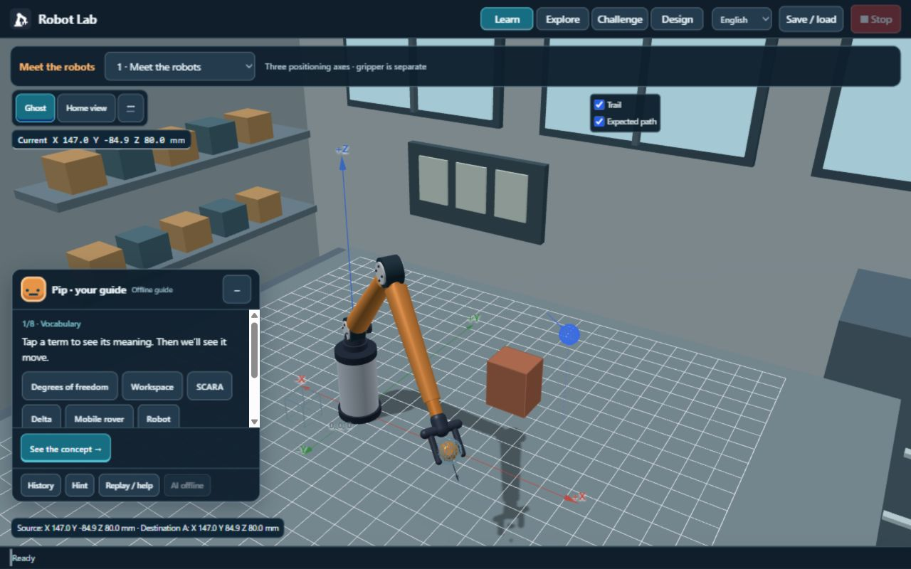
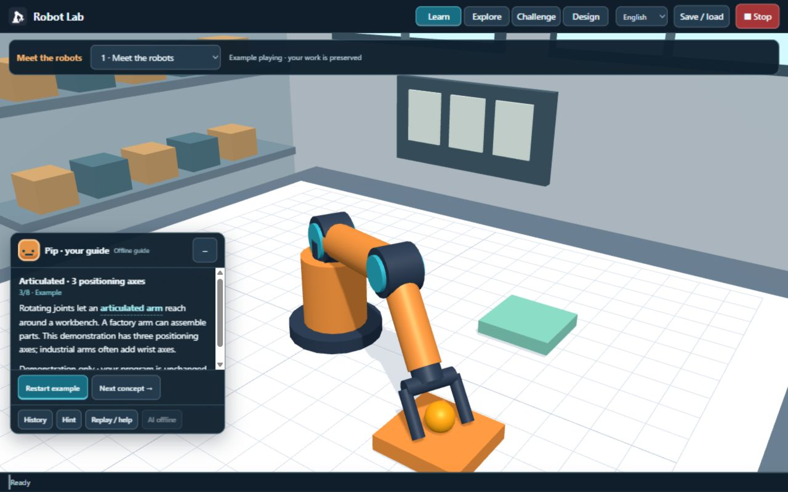
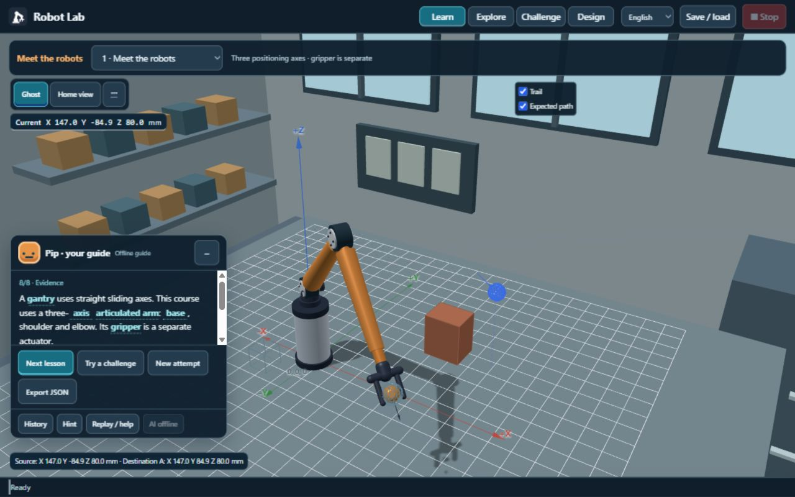
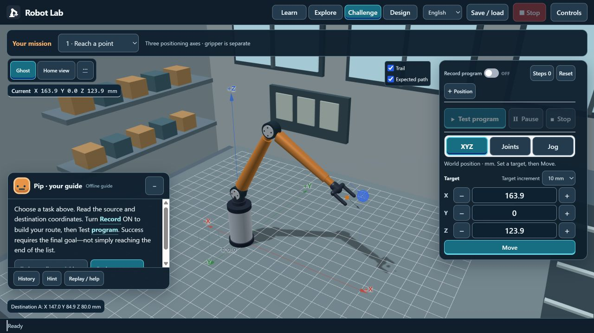
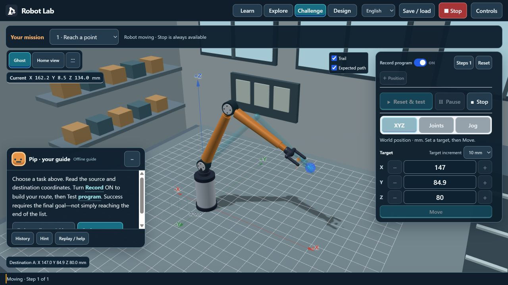
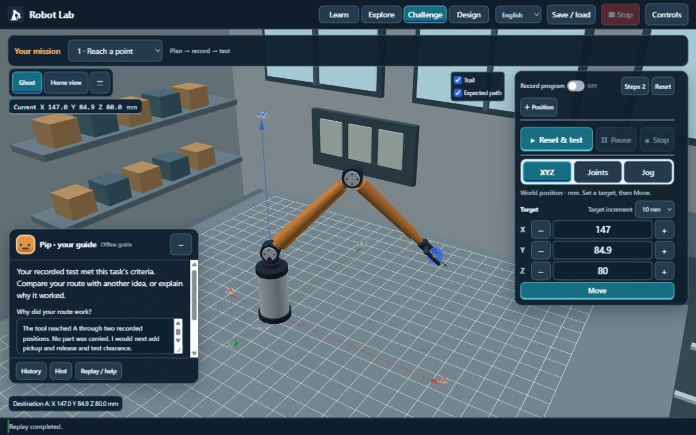
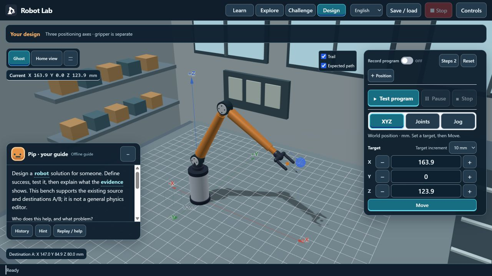
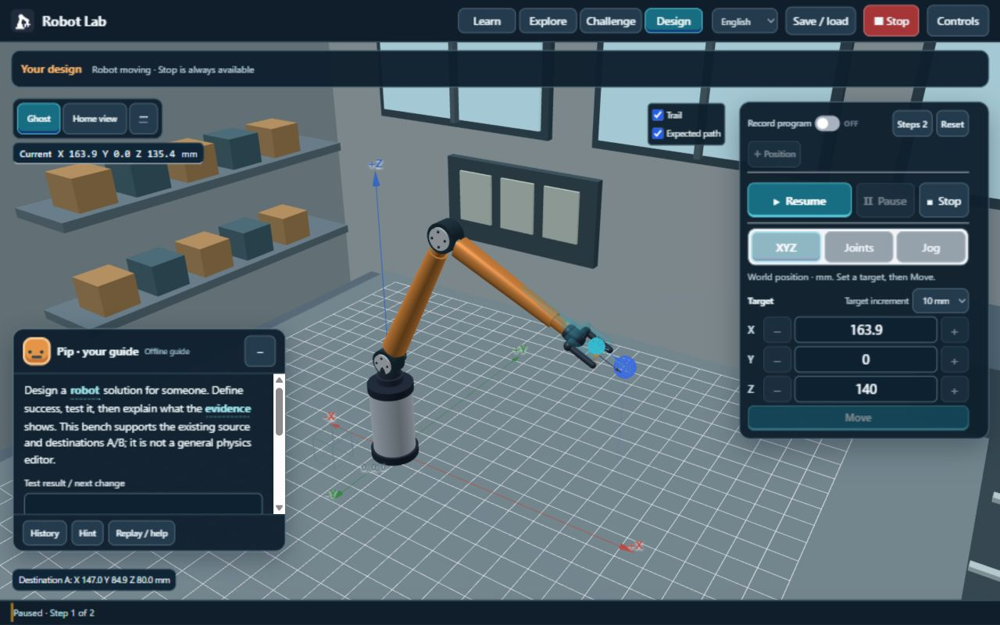
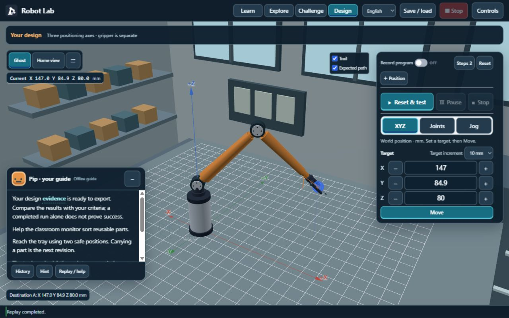
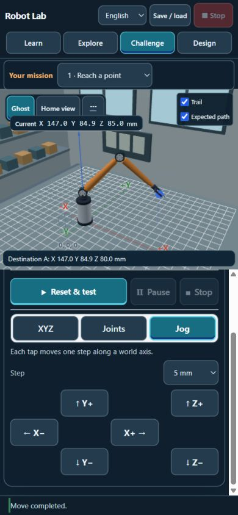
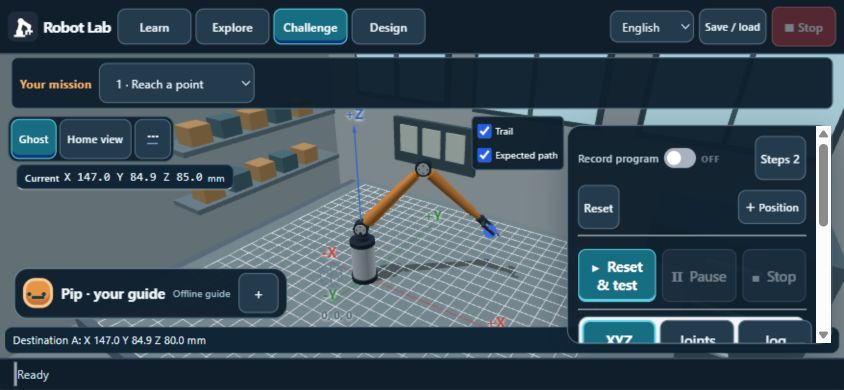
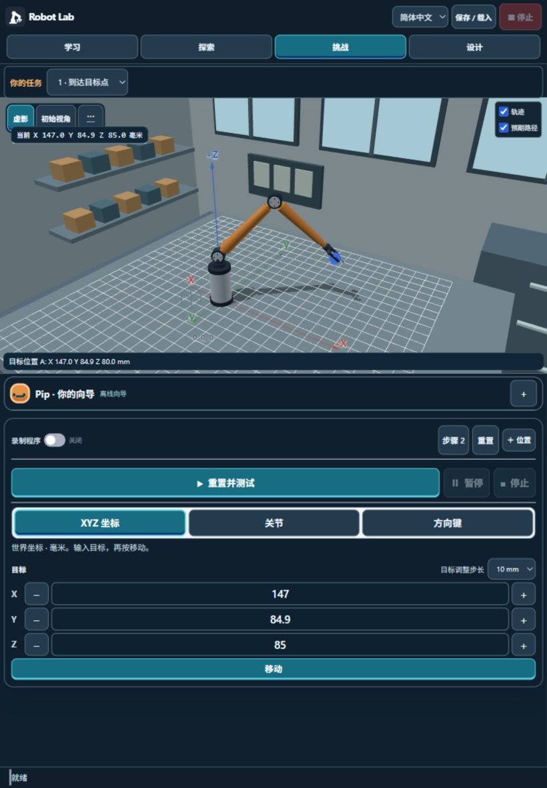
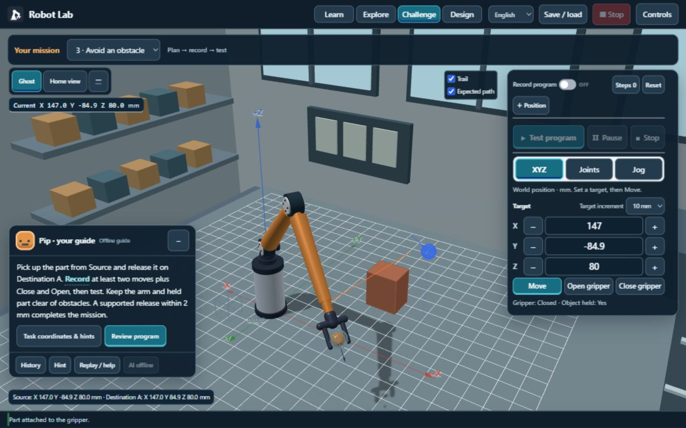